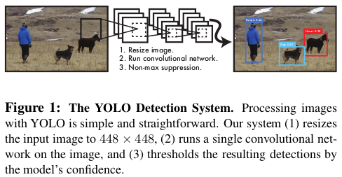
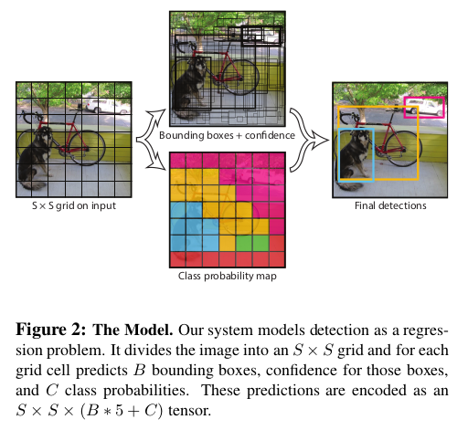
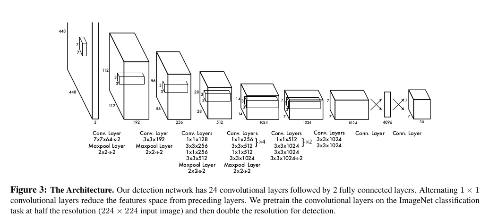

references
Table of Contents
1 You Only Look Once: Unified, Real-Time Object Detection
How?
We frame object detection as a regression problem to spatically separated bounding boxes and associated class probabilites. A single neural network predicts bounding boxes and class probabilities directly from full images in one evaluation. Since the whole detection pipeline is a single network, it can be optimized end-to-end directly on detection performance.
1.1 Introduction

Benefits:
- YOLO extremely fast.
- YOLO reasons globally about the image when make predictions.
- YOLO learns generalizable representations of objects.
Disadvantage:
YOLO logs behind state-of-art detection systems in accuracy.
1.2 Unified Detections
end-to-end
At traning time:
- Divide the input image into an \(S \times S\) grid. If the center of an object falls into a grid cell, that grid cell is responsible for detecting that object.
- Each grid cell predicts \(B\) bounding boxes and confidence scores for those boxes. \(Pr(Object) * IOU_{pred}^{truth}\)
- Each bounding box consists of 5 predictions: \(x,y,w,h\) and confidence.
- Each grid cell also predicts C conditional class probabilities, \(Pr(Class_i |Object)\).

At test time:
class-specific confidence scores for each box is given by:
1.2.1 Network Design

1.2.2 Training
- activation function: (leaky rectified linear activation)\begin{equation} \phi(x) = \begin{cases} x, \quad \mathrm{if} x > 0 \\ 0.1x, \quad \mathrm{otherwise} \end{cases} \end{equation}
- loss (sum-quared error)
We use sum-squared error because it is easy to optimize, however it does not perfectly align with our goal of maximizing average precision. It weights localization error equally with classification error which may not be ideal. Also, in every image many grid cells do not contain any object. This pushes the “confidence” scores of those cells towards zero, often overpowering the gradient from cells that do contain objects. This can lead to model instability, causing training to diverge early on.
To remedy this, we increase the loss from bounding box coordinate predictions and decrease the loss from confidence predictions for boxes that don’t contain objects. We use two parameters, \(\lambda_{coord}\) and \(\lambda_{noobj}\) to accomplish this. We set \(\lambda_{coord} = 5 \ \mathrm{and}\ \lambda_{noobj} = .5\).
Sum-squared error also equally weights errors in large boxes and small boxes. Our error metric should reflect that small deviations in large boxes matter less than in small boxes. To partially address this we predict the square root of the bounding box width and height instead of the width and height directly.
\begin{equation} \begin{matrix} \lambda_{coord}\sum_{i=0}^{S^2}\sum_{j=0}^B \mathbb{1}_{i,j}^{obj}[(x_i-\hat{x}_i)^2+(y_i-\hat{y}_i)^2 + (\sqrt{w_i}-\sqrt{\hat{w}_i})^2 + (\sqrt{h_i}-\sqrt{\hat{h}_i})^2] \\ + \sum_{i=0}^{S^2}\sum_{j=0}^B \mathbb{1}_{i,j}^{obj}(C_i-\hat{C}_i)^2 \\ + \lambda_{noobj} \sum_{i=0}^{S^2}\sum_{j=0}^B \mathbb{1}_{i,j}^{noobj}(C_i-\hat{C}_i)^2 \\ + \sum_{i=0}^{S^2}\mathbb{1}_i^{obj}\sum_{c\in \mathrm{classes}}(p_i(c)-\hat{p}_i(c))^2 \end{matrix} \end{equation}
where \(\mathbb{1}_i^{obj}\) denotes if object appears in cell \(i\) and \(1_{i,j}^{obj}\) denotes that the $j$th bounding box predictor in cell \(i\) is "responsible" for that prediction.
epochs 135 batch size 64 mementum 0.9 dacay 0.0005 dropout 0.5 learning rate:
first epochs \(10^{-3} \rightarrow 10^{-2}\) 75 epochs \(10^{-2}\) 30 epochs \(10^{-3}\) 30 epochs \(10^{-4}\)
1.2.3 Limitations of YOLO
- YOLO imposes strong spatial constraints on bounding box predictions since each grid cell only predicts two boxes and can only have one class.
- Since our model learns to predict bounding boxes from data, it struggles to generalize to objects in new or unusual aspect ratios or configurations.
- Our loss function treats errors the same in small bounding boxes versus large bounding boxes. A small error in a large box is generally benign but a small error in a small box has a much greater effect on IOU. Our main source of error is incorrect localizations.